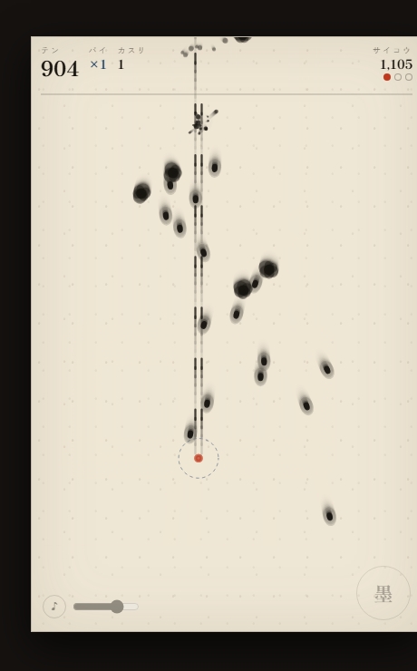
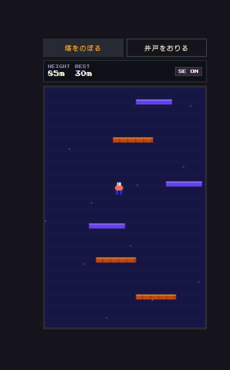
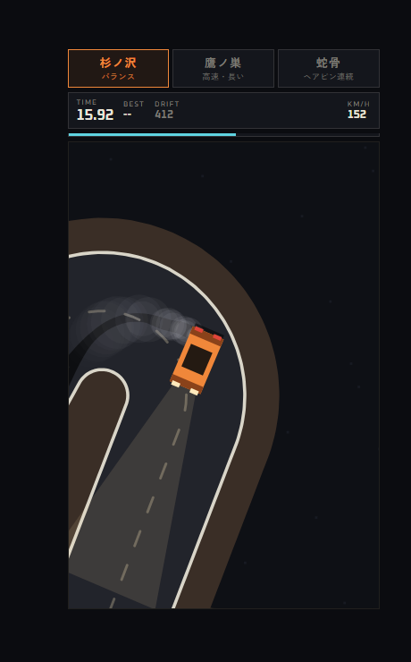
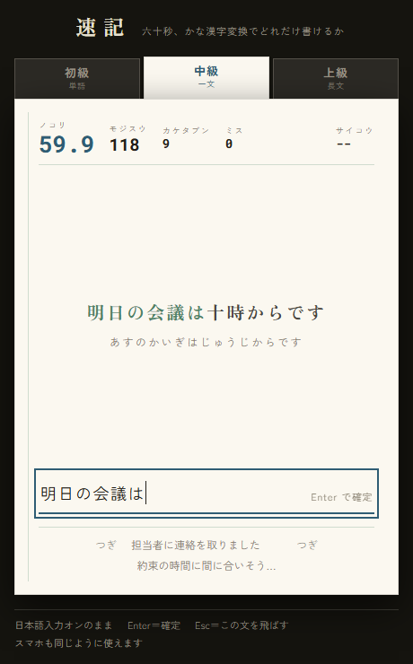
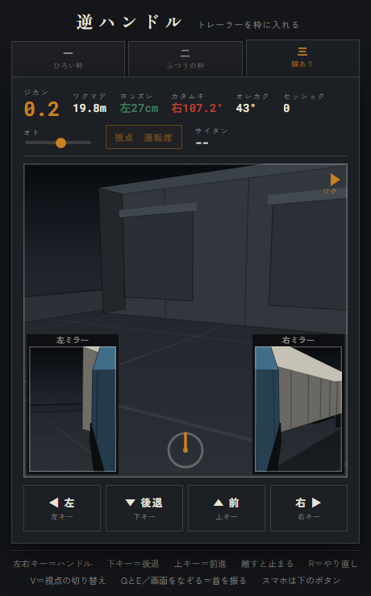

インストール不要。リンクを開くだけで遊べます。スマホでも動きます。

和紙に墨が散る見た目の避けゲー。当たらずに、ぎりぎりでかすめるほど点が伸びます。

ファミコン風のドット絵で2本立て。塔をひたすらのぼるか、井戸をひたすらおりるか。

夜の峠のドリフトタイムアタック。ブレーキは無く、滑らせて速度を落とす。滑った跡は路面に黒く残る。コースは3本。

日本語入力（かな漢字変換）のまま、六十秒で何文字書けるかを測ります。初級＝単語、中級＝一文、上級＝長文の三段。

大型トレーラーのバック駐車。バックでハンドルを右へ切ると荷台の尻は左へ出ます。折れ角110度で下がれなくなるので切り返します。運転席とミラーからの視点、ディーゼルのエンジン音とバックブザーつき。